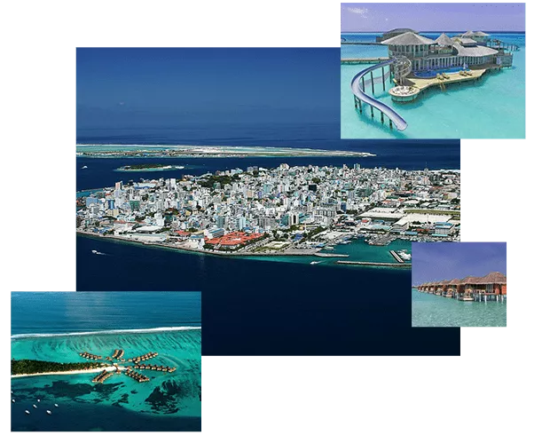
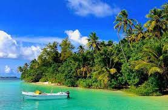
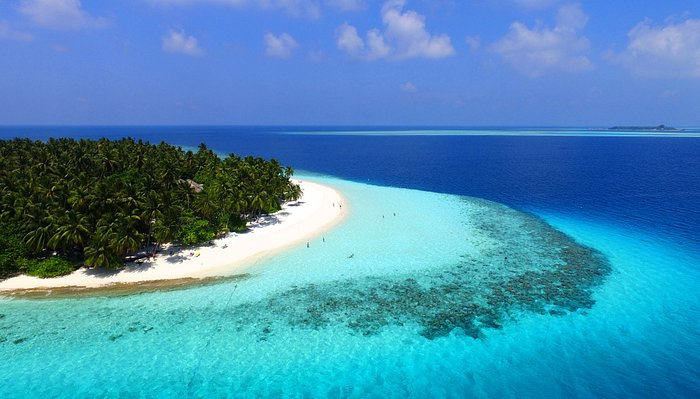

A world-class holiday awaits you in the Maldives, and Tour My India is your perfect
travel companion to make it all work smoother than smooth.
We at TMI are acquainted with every beat of this paradisiacal destination.
Indeed, Maldives is a getaway for those seeking a holiday amidst cyan waters and top luxury hotels,
where they can imbibe the serenity and peace and are pampered throughout their stay. Our Maldives tours from India
proffer just that except with a touch of adventure in it. With us, you have the chance to choose the best island resorts
in the Maldives along with a plethora of water sports activities that can make your vacation something to cherish forever in memories.
Planning an escape to the Maldives with your spouse?
We have lucrative tour packages for you, where the addition of Sromantic
candlelight dinners and cozy rooms can make a whole lot of difference.
Heading to the Maldives for a luxury holiday? You can trust us with finest arrangements.

Top places and tourist attraction to visit in Maldives
BIYADHOO BEACH

A ring-shaped island resort resting in the South Male Atoll, Biyadhoo is
mostly eclipsed with some rich verdure and umber-brown forests. Biyadhoo is home to a diversity of fruits and vegetation
including mangoes and coconuts, cucumbers, tomatoes and cabbages. Oftentimes, referred to as the Scuba Diving Island-Biyadhoo Beach is
marked famous for being home to the site of Kandooma
Thila which in turn is held notable for soft coral and a varied species of fishes. Encased by the majestic Indian Ocean,
the island of Biyadhoo offers a striking view of the Maldives
FIHALHOHI BEACH RESORT

A ring-shaped island resort resting in the South Male Atoll, Biyadhoo is
mostly eclipsed with some rich verdure and umber-brown forests. Biyadhoo is home to a diversity of fruits and vegetation
including mangoes and coconuts, cucumbers, tomatoes and cabbages. Oftentimes, referred to as the Scuba Diving Island-Biyadhoo Beach is
marked famous for being home to the site of Kandooma
Thila which in turn is held notable for soft coral and a varied species of fishes. Encased by the majestic Indian Ocean,
the island of Biyadhoo offers a striking view of the Maldives